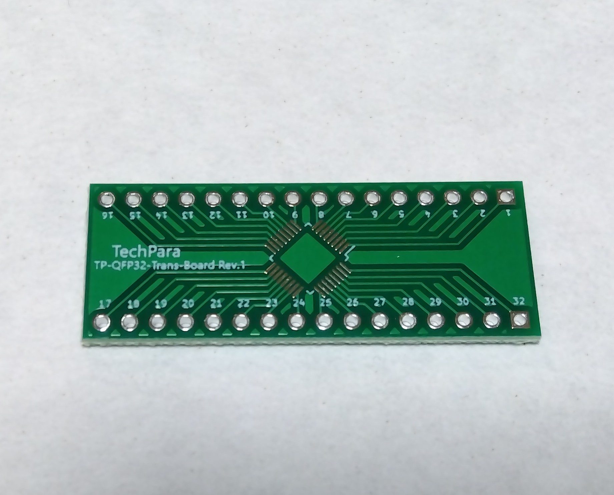
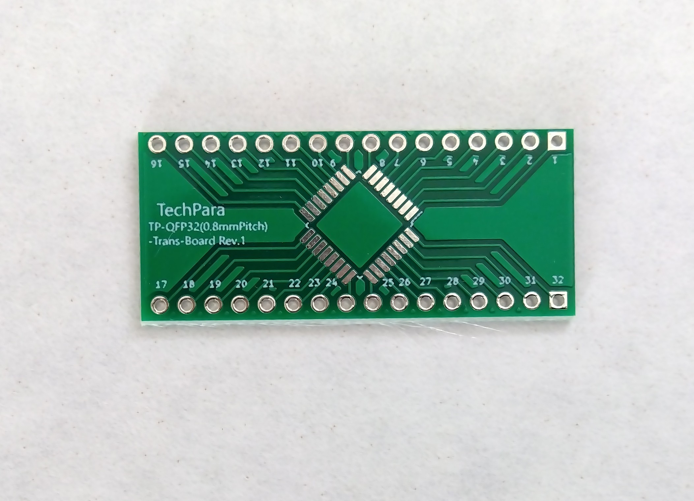
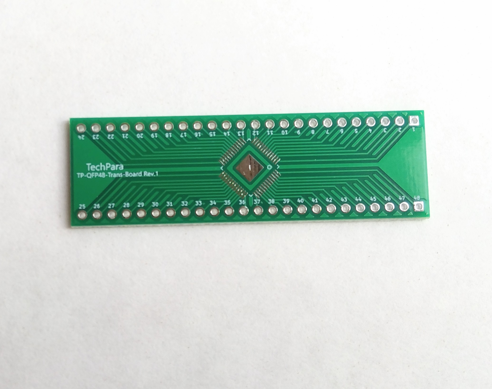
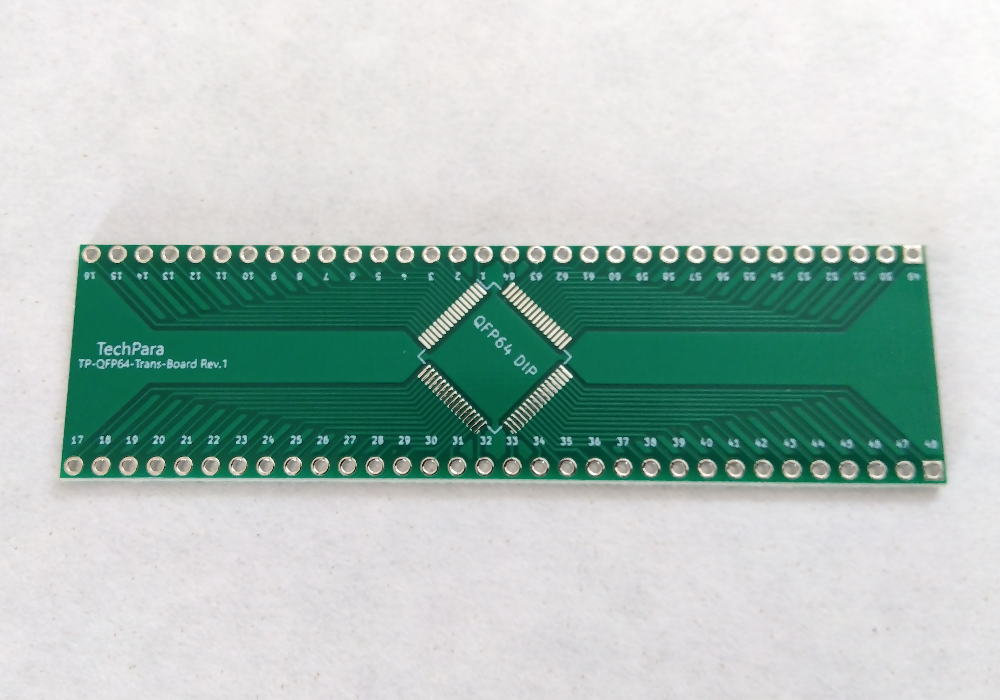
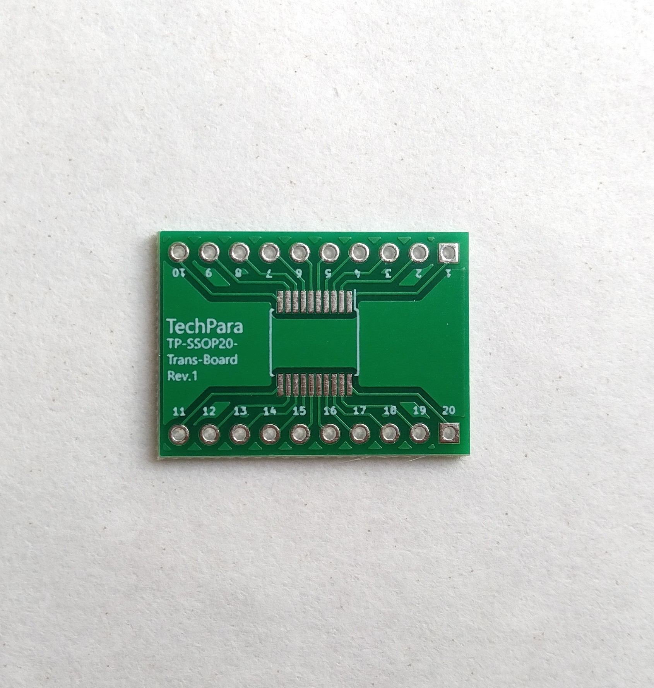
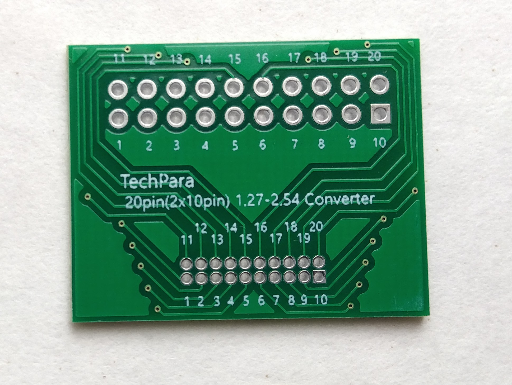

電子工作向け変換基板
表面実装部品をブレッドボードで 使用するためのSMD-DIP変換基板や、 異なるピンピッチを接続する 変換基板を販売しています。
変換基板の一覧を見る →
TECHNOLOGY SUPPORT PRODUCTS
テクパラは、電子工作や技術開発の現場で生じる 小さな不便に着目し、試作や開発を支援する 製品やツールを提供します。
技術開発や試作を支援する製品を 少しずつ展開しています。
表面実装部品をブレッドボードで 使用するためのSMD-DIP変換基板や、 異なるピンピッチを接続する 変換基板を販売しています。
変換基板の一覧を見る →PDF図面を表示し、チェックマークや コメントなどを書き込みながら 検図作業を進めるWindows向けアプリです。
Dracherの詳細・使い方を見る →表面実装部品の試作や、 異なるピンピッチ間の接続に 使用できる小型変換基板です。






技術開発や試作の現場で生じる 小さな不便に着目し、 必要な機能を絞った扱いやすい 製品やツールを提供します。
電子工作、試作、設計など、 実際の技術作業で感じる不便を 出発点として製品を検討します。
目的を明確にし、 扱いやすくシンプルな 製品やツールを目指します。
電子工作だけでなく、 機械設計やソフトウェアなど、 技術開発を支援する分野へ 展開していきます。